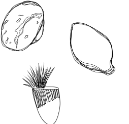

Semences de pays développe une production de semences reproductibles, rustiques et adaptées à une agriculture biologique proche des cycles de la nature, en collaboration avec les initiatives nourricières de proximité.
Découvrez nos trésors de biodiversité sur le shop!
shop.semencesdepays.ch
Chez Mamie
Rue des Rois 17
1204 Genève
Le Topinambour
Avenue William-Fraisse 9
1006 Lausanne
Ferme du Joran
Chemin des Philosophes 15
1350 Orbe
Le Grainier
Route des Mines de Sel
1880 Bex
Nouvelle Terre
Rue du Grand-Verger 12
1920 Martigny